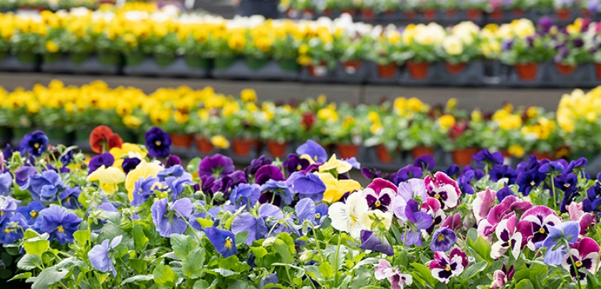
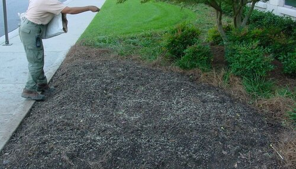

Annual Color Installation
High quality annual color displays start with a design followed by proper preparation of each annual bed and finished with proper annual installation techniques.
Plant choice!
With sound horticulture skills, design your annual color beds with appropriate plant types. Planting design is the foundation for all annual color beds. Use the right plants in the right place. Considering the following:
- Environmental conditions
- Its microclimate
- Planting zone
- Sun or Shade
- Watering requirements
- Irrigation systems
- Patterns
- Plant height (e.g. relative to signage for example)
Bed Preparation
something here
- Consider soil testing to achieve a pH balance between 6-7 (neutral). Add lime to raise the pH or sulfur to lower the pH.
- Remove all excess debris from the bed (mulch, plant material, roots, weeds, rocks etc.)
- The soil must be loose and organic with adequate drainage
- Add organic compost or amendments and incorporated into the bed to a depth of 10” - 12” (if the bed size is larger than desired, remove soil prior to adding amendments)
- Insure there is a 3”-4” trench along all hard surfaces (curbs, walks)
- According to the results of the pH test, add the appropriate fertilizer to achieve a balanced soil for desired annuals. Gernerally, use a 14-26-6 fertilizer, put out at a rate of 4 lb. per 1,000 sq. ft. This is equal to two 16 oz. cups full of fertilizer sprinkled lightly across a 1,000 sq. ft. bed.
- Rake freshly tilled bed to achieve a gentle slopped appearance in an effort to “display” your newly installed color. Flat beds are not attractive with poor drainage.
Setting out and planting
Annual installation starts with fertilizing the beds before setting out the plants.
- Hand watered thoroughly before planting.
- The plants should then be set out in straight, staggered rows and spaced correctly (pending plant type and desire). The first row should be set approximately 12” from the bottom of the bed. Pay close attention to the pre-determined planting design and follow it as closely as possible. (It is important to set out the bed before planting because it is easier to make adjustments before the plants are in the ground.)
- Once the entire bed is set out per planting design, planting may begin.
- Remove the annual from the pot and loosen the root ball by squeezing it lightly
- Install the plant with the top of the root ball level with the soil. (The only exception to this rule is when planting kale or cabbage, these varieties should be planted up to the top two or three whorls of leaves.)
- Avoid stepping into the bed while planting. If it is unavoidable, do not step on any plants and rake out any footprints. This important in order to insure that the mulch will sit evenly on the bed.
- Mulch is applied after planting in the form of small mini-bark nuggets or shredded hardwood mulch. The mulch acts as a weed barrier, helps retain soil moisture and gives the bed a decorative look. It is applied evenly over the bed and then dusted off of any plant material (DO NOT COVER PLANTS). Utilize the leftover mulch bags for clean-up(trash, pots, roots, rock etc).
- The beds should be watered by hand or the irrigation, if applicable. The irrigation must be set to run before leaving the property. The soil should be moist at finger’s depth and it should be checked in several locations. Water once every 3 days during the first 2 weeks following installation (1” of watering is the desired goal), then once a week should be sufficient pending weather.